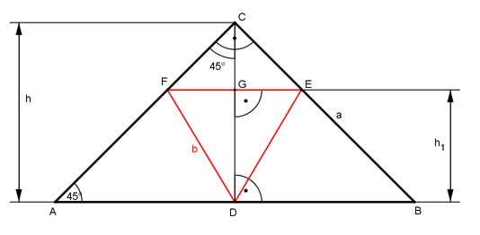

Pythagoras Aufgabe 62 Einem gleichschenkligen, rechtwinkligen Dreieck ist ein gleichseitiges Dreieck einbeschrieben. Drücken Sie b durch a aus.  Strahlensatz: FE = b AB = c b : c = (h - h1) : h (1) Satz von Pythagoras im Dreieck ABC: c² = a² + a² = 2a² |√ c = 1,414 * a Das Dreieck ADC ist gleichschenklig, weil der Winkel bei C = 45° und der Winkel bei A = 90° - 45° = 45°. Deswegen ist h = AD = c/2. 1,414 * a h = ----------- = 0,707 * a 2 Satz von Pythagoras im Dreieck FDG: FG = b/2 b² = h1² + FG² |-FG² b b² 3 h1² = b² - (---)² = b² - ---- = ---b² 2 4 4 h1 = 0,866 * b Eingesetzt in (1): b : 1,414 *a = (0,707 * a - 0,866 * b) : 0,707 * a Inneres Produkt = äußeres Produkt: 0,707 a * b = 1,414 * a * (0,707 * a - 0,866 * b) 0,707ab = a² - 1,225ab | : a 0,707b = a - 1,225b | + 1,225b 1,932b = a | : 1,932 b = 0,52 * a